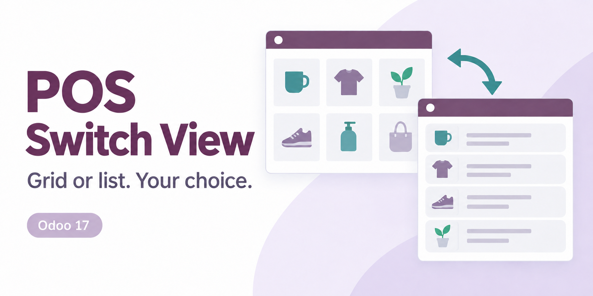
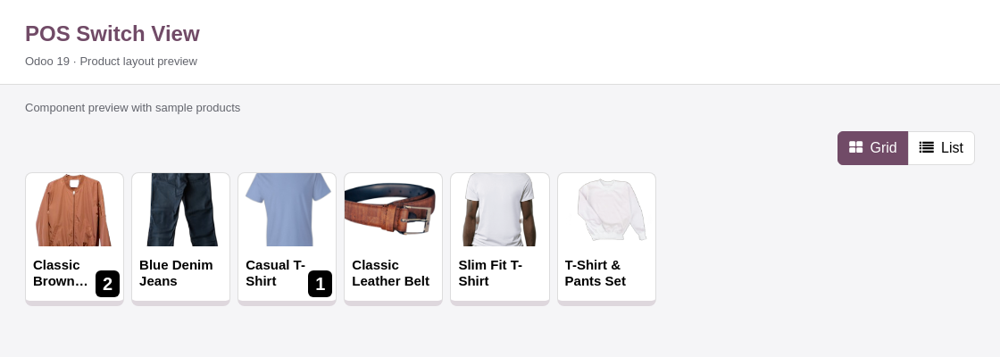
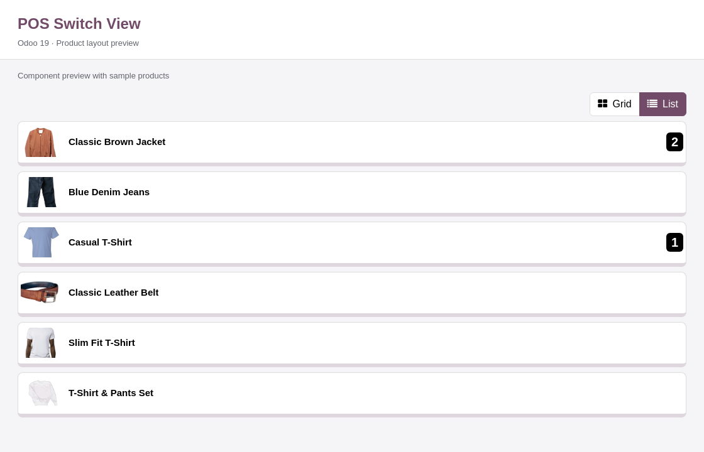
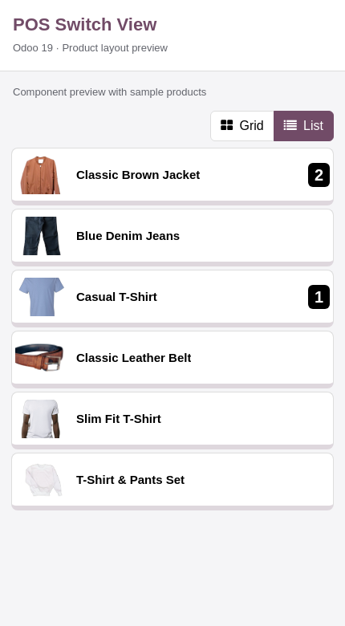

A different view of your products
Choose product tiles or a clear, full-width list directly from your Point of Sale screen. Change the layout in a click and keep selling with the product selection flow you already know.
Browse familiar product tiles with images when enabled. Return to Grid whenever you prefer a visual overview of the catalog.
Display one product per row. Give product names room to wrap while keeping optional thumbnails and product prices visible.
Interface previews
Reference previews from the Odoo 19 edition, rendered with sample data in an isolated browser preview. These are not live POS screenshots. Odoo 17 product cards and controls may differ.


Use the same Grid and List controls when the product pane is visible on a smaller screen. List rows resize to the available width.
The controls appear above the product categories in the product pane.

Grid and List buttons sit above the products. The highlighted button identifies the active view.
Keep the selected layout when you reload. Each POS configuration has its own preference in the current browser.
Click a product row to use the standard add-to-order flow, including product options where applicable.
Retain the standard Odoo 17 product price and product information control in either layout.
Continue using POS search and category filters. The switch changes how the displayed products are arranged.
List rows follow the existing POS image setting. With images disabled, product names remain visible in each row.
01 / INSTALL
Place the addon in your addons path, restart Odoo and update the Apps List. Remove the Apps filter and install POS Switch View.
02 / OPEN POS
Open Point of Sale, or reload an existing POS browser tab to load the new frontend assets.
03 / CHOOSE
Click List above the products for rows, or Grid to return to tiles. No extra settings screen is required.
This release targets Odoo 17 and depends on Point of Sale. It uses no Enterprise-only dependency. Validate the addon with your edition and any other POS customizations before production use.
Use an Odoo 17 deployment that supports custom server addons, such as Odoo.sh or a self-hosted installation. Standard Odoo Online does not support installing this addon.
The preference is stored per POS configuration in this browser. Cashiers sharing the same browser and POS share that choice. Other browsers and devices keep separate preferences. Clearing browser storage resets the choice; when storage is unavailable, switching still works for the current POS session.
This version shows the existing product name, optional image and native price in rows. Extra pricing, stock, barcode and sortable table columns are not included.
No external service, API key or extra Python dependency is required. The addon changes the POS frontend layout.
Created and maintained by Mitchel Admin.
For installation questions or an issue, email your Odoo version, module version, browser and steps to reproduce the problem.
erpmitchellodoo@gmail.com